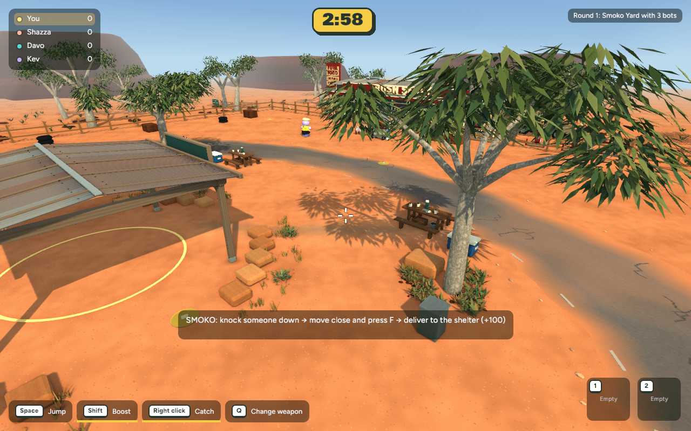
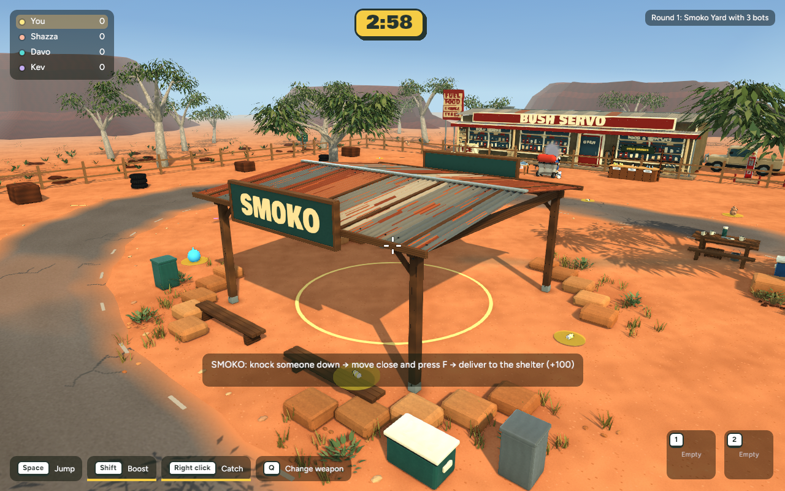
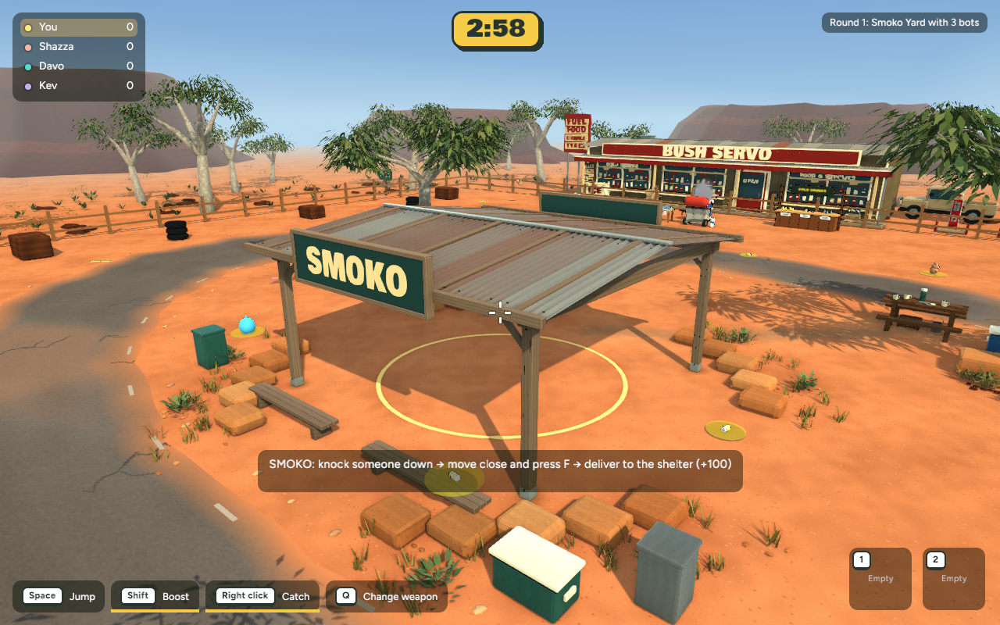
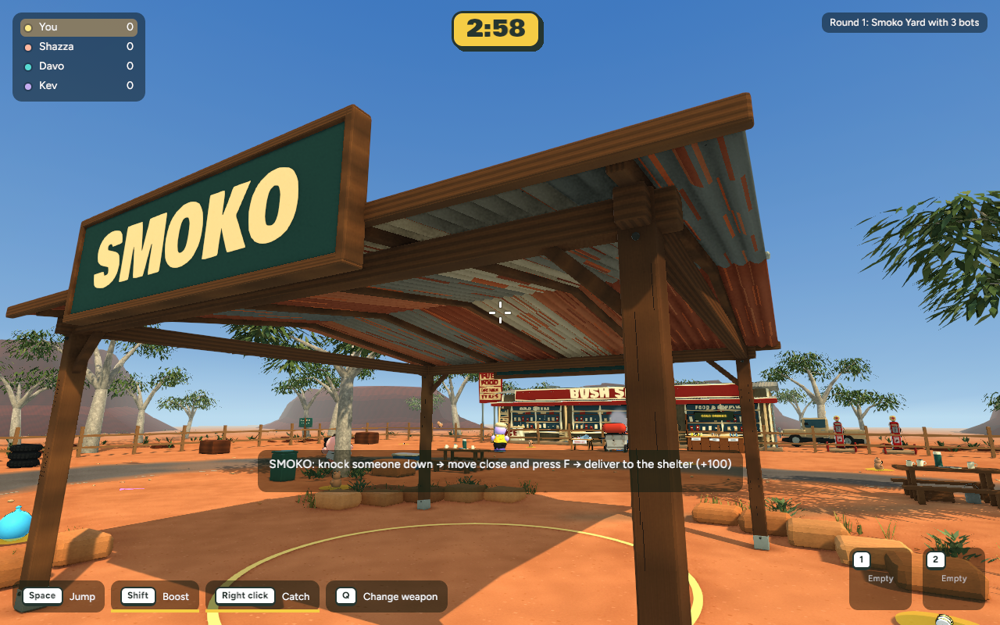
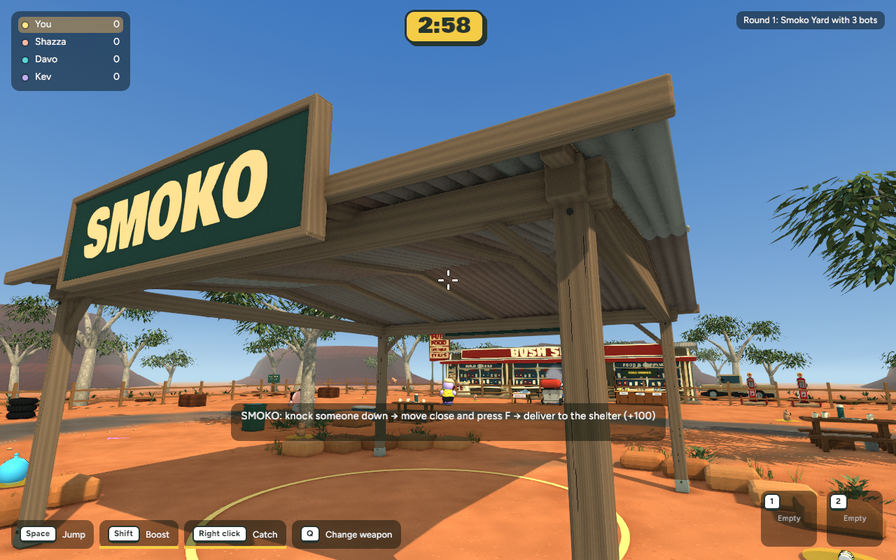
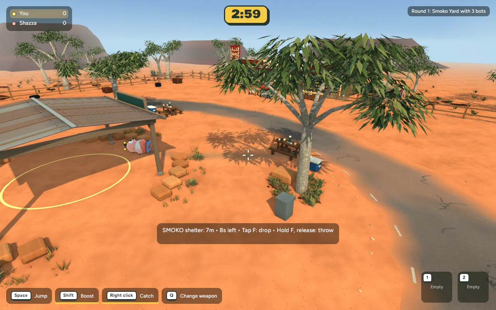
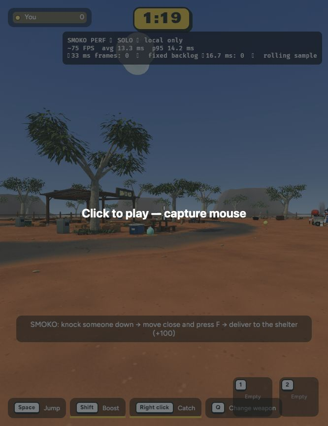
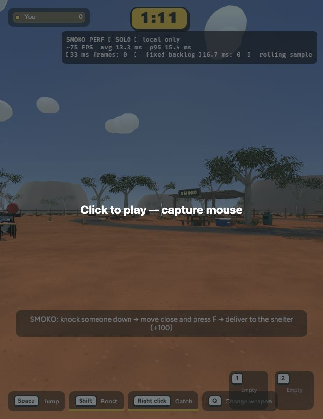

Actual game captures · completed 5 November 2026 · Ready for review
Heavier upper framing, worn rounded post edges, grain aligned with each board, visible cut ends and more natural sheet-metal weathering. Posts keep their original footprint and height; the underside of the main bearers stays at 3.54m. Other scenery and picnic props are unchanged.






75 captured frames. Smoko delivery awards +100 and releases the carried victim.
| Native view | Mean before → after | p95 before → after |
|---|---|---|
| Gameplay / ground | 7.896 → 8.029 ms | 10.101 → 10.181 ms |
| Shelter roof | 7.866 → 8.272 ms | 10.213 → 10.529 ms |
| Under-eave detail | 7.901 → 8.847 ms | 10.204 → 11.697 ms |
The closest-view repeat measured 8.055 → 8.538ms (~0.48ms additional cost); p95 11.648 → 10.821ms. Same 1280×800 cameras, 600 uncapped intervals. This adds some close-up shading cost, with no extra triangles or material batches.
Browser smoke samples stayed around 75 FPS / 13.3ms average. The game chose different spawn views, so this is not a precise browser A/B. Mouse capture was blocked in the embedded browser; normal multiplayer/input behaviour was not retested.


29,318 triangles and 16 material batches, unchanged. Model download +0.38 MB; estimated texture storage including mips +2.45 MB. No gameplay or collision-code edits. Existing native and browser executables reused for this asset-only update.
Backup verified; Blender authoring and runtime asset validation, Smoko delivery, Backyard smoke and moving-camera captures complete. Nothing committed or published.
Checkpoint, exact changes and rollback
cd /Users/marcus/Claude/australian-bbq/rust ~/.cargo/bin/cargo run -p bbq_app --release -- --menu
Solo game → Bush Servo → Play Smoko.